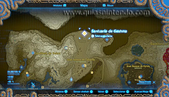
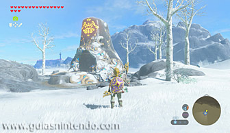
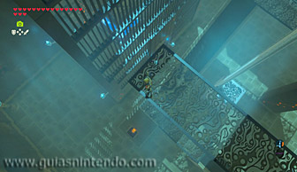
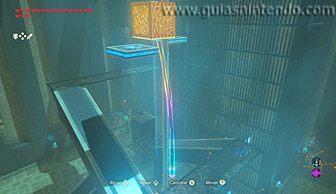
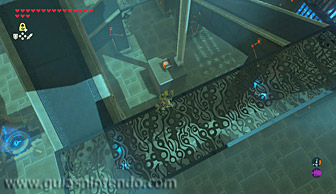
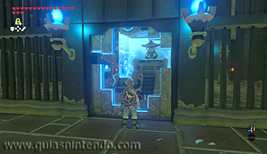

Se encuentra en la región de la torre de Hebra, al norte de la gran estepa de Tabanta (al norte de en la estepa de Tabanta norte).

En la primera estancia del santuario deberás subir por una rampa que hay a mano izquierda y avanzar hasta el final. Así podrás dejarte caer sobre un cofre que podrás ver más abajo, el cual contiene una espada real.

Luego vuelve a subir por la misma rampa hasta llegar al segundo tramo horizontal del recorrido y una vez allí utiliza el módulo Imán para coger un cubo metálico que está unido a un raíl y bajo el que hay un cofre. Eleva el cubo todo lo que puedas y suéltalo cuando pase por debajo de él una plataforma móvil, y después paralízala con el módulo Paralizador. Así podrás dejarte caer sobre el cofre y hacerte con la llave pequeña que hay dentro.

Finalmente, utiliza la llave que acabas de conseguir para abrir la puerta cerrada que hay en la pared contraria a donde está la entrada al santuario y así podrás llegar hasta el altar y obtener un símbolo de valía.
